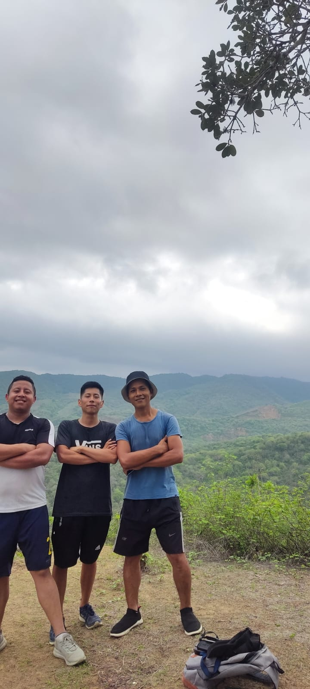
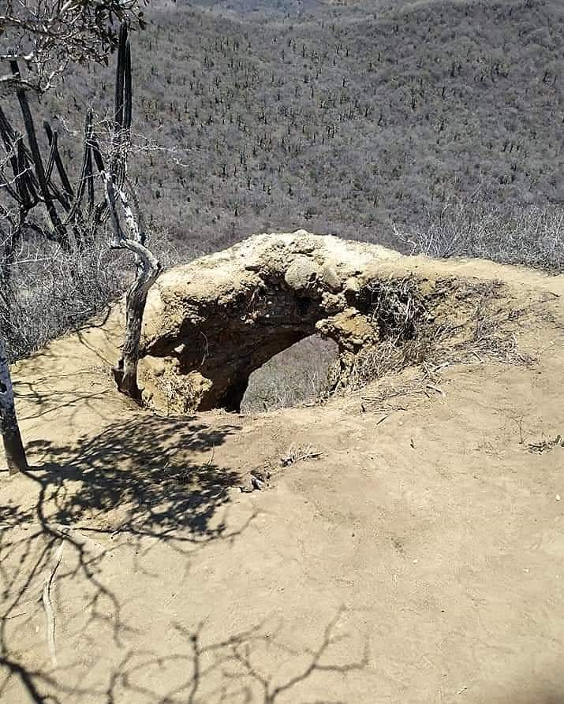

Las mejores fotos Rutas,Joa Chocotete




De vez en cuando es importante darnos la oportunidad de explorar y conocer lugares con una vegetación, senderos y montañas que nos proporciona una conexión directa con la naturaleza, ayudando a nuestra la salud física y mental. Estas experiencias permiten desconectar de la rutina, ofrecen desafíos personales, y nos brindan un profundo sentimiento de victoria al conquistar cumbres o descubrir paisajes naturales únicos.